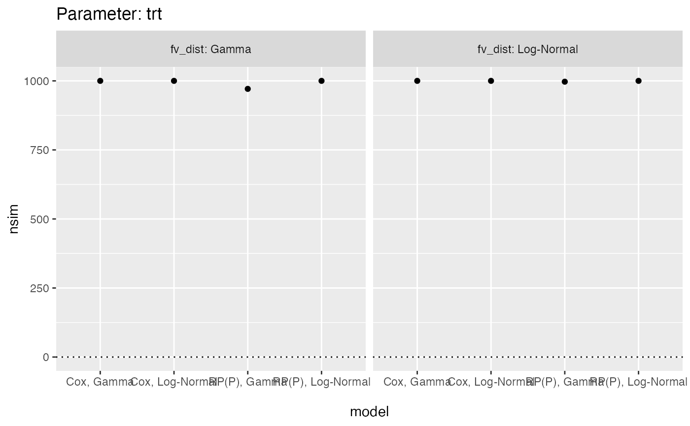

autoplot method for summary.multisimsum objects
Source:R/autoplot.summary.multisimsum.R
autoplot.summary.multisimsum.Rdautoplot method for summary.multisimsum objects
Usage
# S3 method for summary.multisimsum
autoplot(
object,
par,
type = "forest",
stats = "nsim",
target = NULL,
fitted = TRUE,
scales = "fixed",
top = TRUE,
density.legend = TRUE,
zoom = 1,
...
)Arguments
- object
An object of class
summary.multisimsum.- par
The parameter results to plot.
- type
The type of the plot to be produced. Possible choices are:
forest,lolly,zip,est,se,est_ba,se_ba,est_density,se_density,est_hex,se_hex,est_ridge,se_ridge,heat,nlp, withforestbeing the default.- stats
Summary statistic to plot, defaults to
bias. Seesummary.simsum()for further details on supported summary statistics.- target
Target of summary statistic, e.g. 0 for
bias. Defaults toNULL, in which case target will be inferred.- fitted
Superimpose a fitted regression line, useful when
type= (est,se,est_ba,se_ba,est_density,se_density,est_hex,se_hex). Defaults toTRUE.- scales
Should scales be fixed (
fixed, the default), free (free), or free in one dimension (free_x,free_y)?- top
Should the legend for a nested loop plot be on the top side of the plot? Defaults to
TRUE.- density.legend
Should the legend for density and hexbin plots be included? Defaults to
TRUE.- zoom
A numeric value between 0 and 1 signalling that a zip plot should zoom on the top x% of the plot (to ease interpretation). Defaults to 1, where the whole zip plot is displayed.
- ...
Not used.
Examples
data("frailty", package = "rsimsum")
ms <- multisimsum(
data = frailty,
par = "par", true = c(trt = -0.50, fv = 0.75),
estvarname = "b", se = "se", methodvar = "model",
by = "fv_dist", x = TRUE
)
#> 'ref' method was not specified, Cox, Gamma set as the reference
sms <- summary(ms)
library(ggplot2)
autoplot(sms, par = "trt")
